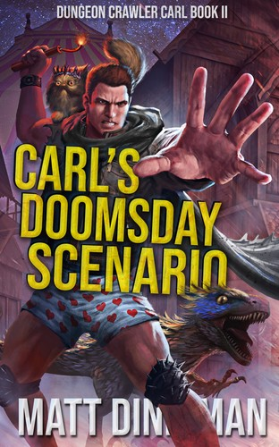
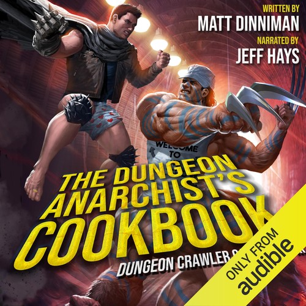
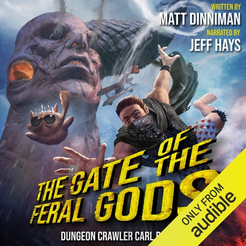
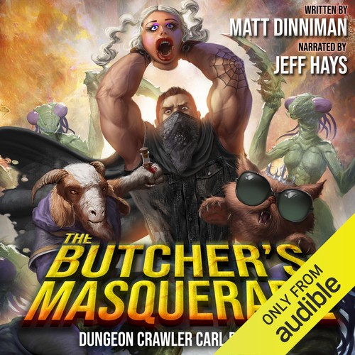
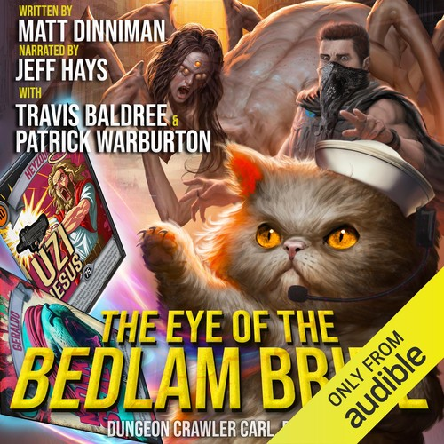
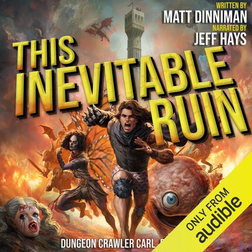
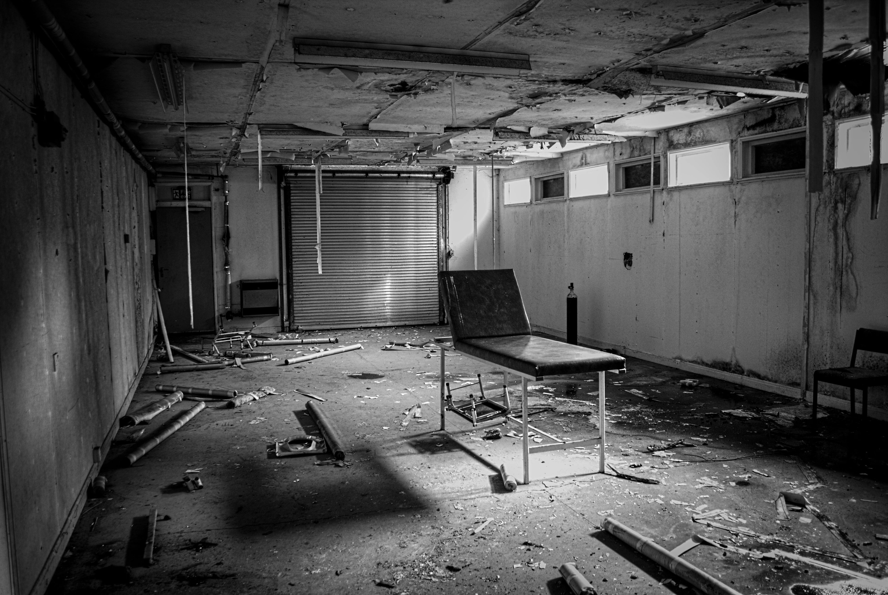

Dungeon Crawler Carl and the Strange Dignity of LitRPG
LitRPG is a weird genre to be into. Don't get me wrong, I can't get enough and I'm consuming LitRPG books like my dog when he ate my partner's burrito that one time. The titles are often a huge turn-off, à la The Reincarnated Goblin Tax Auditor: Book One of the Spreadsheet Saga, and it's awfully difficult to explain the genre to people in general. It's a bit easier to explain to gamers, but man, trying to explain why you're getting excited about a narrator reading a stats sheet to a NON gamer is impossible. I'm still sure that 80% of the books in the genre are algorithmic slop, written for people who insist that a book whose most used word is "Harem" counts as good LitRPG and solid literature and not, y'know, erotica. Sure, buddy. There's a lot of weird stuff in LitRPG, but then you'll find a lot of weird stuff in fiction, sci-fi, fantasy (don't get me started on what people consider acceptable in the Dresden Files) etc., so don't judge a whole genre on the confusing titles or the niche of people using it to explore fantasies that have little to do with sword and sorcery.
With my general disdain for AI slop masquerading as literature, and the off-putting titles of the genre out of the way, let's get our geek on and discuss one of my favorite book series of all time.
Dungeon Crawler Carl was a revelation. I tried, twice, to summarise the plot to my partner after she asked about the series she'd heard Jeff Hays narrate through our speaker while I was doing dishes. So I hit pause and began to explain.
"OK I don't know how to explain this without sounding like I'm having a stroke, but it goes like this: there's this Coast Guard vet, right, and he's living with his girlfriend but she's off cheating on him with some dude, and he's mad, and then their cat escapes through the window (don't worry the cat is ok), and he goes out to get it then the world ends, and aliens turn every building on Earth into rubble and everyone and everything who is inside a building dies or is reused by the aliens, anyway Carl, the coast guard vet, he's stuck in his boxers, then there's this dungeon that opens for some reason - why? Well, aliens, but we'll get to that later.
Anyway, his ex-girlfriend's prize-winning Persian show cat suddenly gains sentience, starts casting magic spells, and decides she's the main character and a diva who loves sunglasses and drama. So they're fighting their way down eighteen floors of a planet-sized dungeon while the whole thing is being broadcast to the galaxy as a reality TV show because aliens like that.
And the theme is that the entire series is just this brutal, hilarious and depressing fever dream about late-stage capitalism / corporatism, where corporations have figured out that if you gamify human suffering, you can monetize the apocalypse as the ultimate reality TV show. The whole premise is essentially the literary equivalent of wearing neon-pink, bedazzled sunglasses to a funeral and -- oh and the cat's name is GC, BWR, NW Princess Donut the Queen Anne Chonk."
My partner, kindly, said something like "Wow it sounds great!" and I realized how great my partner is for showing interest in what sounded mostly like a half recalled dream. I mean, the premise is absurd, and saying it out loud doesn't help at all.
If you need a quick frame of reference, imagine The Hunger Games crossed with The Running Man, broadcast on a Twitch stream with an item shop, a sponsorship system and an unhinged AI announcer. That gets you about a third of the way there.
© Ken Reid. All rights reserved. Enter the dungeon?
Dungeon Crawler Carl is a an ideal example of emotional storytelling that proves a book does not have to take itself seriously to cause us LitRPG nerds to cry. The arbitrary, ridiculous game mechanics are not hiding the writing but the engine that gives the writing its weight. I went in expecting junk-food progression fantasy (which, don't get me wrong, I enjoy) and found myself, somewhere on Floor 3, ambushed by one of the bleakest critiques of late-stage capitalism, imperialism, and the commodification of trauma I have ever encountered in genre fiction. I don't know how many times this series made me cry or heighten my heart rate with excitement.
If you haven't read the series, please do. I've been light on them so far, but I must warn you, there are spoilers below, beware.
Quick jargon guide
- LitRPG: short for Literary Role-Playing Game. A subgenre where the world literally works like a video game: characters have stat sheets (think Strength: 14, Intelligence: 9), level up by earning experience points, choose classes like Archer or Healer, and find loot with numbered bonuses. The difference from a normal fantasy novel is that you see all those numbers on the page, as pop-up boxes and system notifications, the way a player would see them on screen.
- Stats and levels: in most LitRPG, getting stronger is a mechanical process. Kill enough monsters, complete enough quests, and a number goes up. That number grants a real, quantified boost. The appeal is the same as watching an XP bar fill in a game.
- Progression fantasy: a broader cousin of LitRPG. Same core appeal: protagonist measurably gets stronger, but without necessarily showing the stat sheets. Think of it as the feeling of levelling up, with or without the UI. DCC straddles both.
- The System / the AI: the in-universe entity that runs the dungeon. It sends Carl pop-up notifications, announces achievements, writes patch notes mid-apocalypse, and increasingly behaves like an unstable reality-TV showrunner with a crush on him. Part game engine, part captor, part unreliable narrator.
- The Syndicate: the galactic corporate body that owns the broadcast rights to the dungeon. They are the reason the dungeon exists at all. It is a product, and the crawlers are the content.
- Crawlers: the human survivors forced into the dungeon. The word the System uses for them. The cast.
The LitRPG Baggage and Carl’s Exhausted Rage
LitRPG has earned its bad reputation honestly. The genre is full of wish-fulfilment power fantasies in which a put-upon office worker dies, gets reincarnated as a level-one whatever, and proceeds to optimise their stat allocation across nine hundred pages of combat tutorials. Characters are flat. Women are decorative. Stat blocks interrupt the prose every other page like banner ads. The entire reading experience is engineered to scratch the same itch as an idle clicker game or the fantasies of every kid who grew up wanting to become a super saiyan. Ok saying that hurt me a little.
Matt Dinniman knows all of this. He is writing inside the genre, not above it, and he takes every one of those tropes and weaponises them.
The levelling-up in DCC is not a power fantasy, at least that's not the main purpose. Instead, it's a terrifying arms race against a system that is mathematically rigged to kill the crawlers, on a timer, for an audience. Every new class, every shiny new piece of loot, every perk, comes with a punchline that translates roughly to: congratulations, the next floor will be worse. Stat increases don’t feel like rewards so much as the tightening of a screw. Carl is being conscripted into a war whose terms he never agreed to and cannot refuse, and even the smallest victories come at a cost.
There is a nice mechanical wrinkle in here too. Early in the dungeon every human is forced to pick a fantasy or alien race — Elf, Dwarf, Primal, Troglodyte, the usual roster — for better stats. Roughly 80% of the survivors stubbornly stick with “Human” on the character-select screen, and the book is very clear that this is a costly piece of pride. They make up the majority of the casualties. The system is essentially charging them rent for refusing to stop being themselves, and I cannot think of a more on-the-nose metaphor for what assimilation costs people in the real world.
© Ken Reid. All rights reserved.The dungeon is made of human architecture swallowed up and reused.
What carries this is Carl himself, he's a truly three dimensional characters, not a stoic action-movie badass. He is exhausted; chronically, recognisably, miserably burnt out, in the way that anyone who has ever held down a job inside a system that is actively trying to grind them down will recognise instantly. His anger is not the cool, controlled fury of a fantasy hero. It is the low, simmering rage of a man who is too tired to be heroic but cannot stop fighting because the alternative is worse. The river in his mind roars and subsides but it is always there. He grows, he experiences grief, sadness, and works on himself emotionally, mentally and physically. It's so nice to have a positive masculine main character, not some perfectly sculpted Marcus Aurelius.
You will not break me.
When Carl says that, it is easy to read it as the sort of line a movie poster would slap over an explosion. In context it is the opposite. It is a man clinging to his last shred of humanity by his bleeding fingernails, in a quiet moment, mostly to himself, because there is no one else around to hear it. The whole series turns on lines like that. They land because Dinniman has spent hundreds of pages establishing exactly how much it has cost Carl to still be the kind of person who would say them. Carl is not some main character with insane power fantasy level abilities, who can teleport in and out of shadows, crush enemies with his mere aura or swing an axe made of creation and chaos, he's a normal dude in an absolutely ridiculous situation, who found meaning in the struggle against a crushing systemic force, and found meaning in his brothers and sisters who had fought the same fight and failed.
And he isn’t carrying it alone. Mordecai, the crawlers’ in-dungeon manager, is a changeling who used to do exactly this job for a previous extinction event on a previous planet. He is processing his own complicity in real time, trying to keep Carl and Donut alive while remembering when he was the one being filmed. The supporting cast in DCC are, to varying degrees, all working through some version of that question.
Worth noting, since the genre usually isn’t great at this: the women in DCC are just as three-dimensional. Katia Grimsdottir enters the story as a quiet side character with a trauma history that could easily have been left decorative, and by Book 4 she has become one of the dungeon’s most structurally important figures. Her arc is specifically about a woman who has spent her whole life being made smaller, discovering inside a planetary meat grinder that she is not. That arc is handled with the same seriousness as Carl’s, and it is not the exception in the series.
The cast is also diverse in the boring, normal way real life is diverse. Carl is a white guy from the Pacific Northwest; Imani is Black; Bautista is possibly Filipino; other major crawlers come from India, China, all over the place. Their backgrounds occasionally feed into the specific mythologies the dungeon throws at them, but mostly they are just people trying not to die. The dividing line the book is interested in is crawlers versus showrunners, not human versus human, except in specific 1 on 1 instances rather than prejudice driven ones.
The series at a glance







Seven books published so far. Book 8, A Parade of Horribles, is out May 2026. I cannot wait.
Crying Over a Cat
Animal sidekicks in fantasy are usually furniture or comic relief, walking inventory slots, or convenient deus ex machina with fur. A companion that exists to be cute or show how the MC has some mastery over universal forces, where you would be sad at the loss of the companion due to it being adorable, rather than because you care about its character development, because it's actually a character. The genre is littered with telepathic dragons and wisecracking ferrets whose entire characterisation amounts to “loyal” and “sometimes hungry.”
Princess Donut starts out looking exactly like that. She is a Persian show cat with grand championship ribbons, and on Floor 1 she eats an enchanted biscuit and becomes sapient. Suddenly she can talk. She can cast spells. She is, for the entire run of the series, magnificently insufferable: she demands reality TV perks, she negotiates her own sponsorship deals, and she is a diva and the book lets her be one.
Being eaten by a bugbear makes me uncomfortable, Carl. So if your boyfriend ogling your tootises keeps these easy-peasy bugs coming at us instead of more of those lava-spitting llamas, then you better buck up, get over your human male privilege, and take one for your princess.
Somewhere around Book 2, the floor drops out from under you. If you stop laughing at the absurdity for a second and actually look at Donut’s situation, it is a psychological horror story. She is an innocent creature violently thrust into full sapience inside a televised, planet-wide meat grinder. The true nightmare, however, isn't the apocalypse, or the realization that she is the last of her breed.
With forced sapience comes the agonizing, retroactive realization of who her owner actually was: Donut isn't just grieving a lost mother; she is forced to process, with sudden human-level intelligence, that the person she worshipped was a shallow narcissist who abandoned her in the cold without a second thought, and who intended to sell her for cash as a show-cat "queen" (which I just learned is the term for a female cat used for breeding in shows). She has to grapple with the devastating fact that her entire pre-dungeon existence was built on a lie, defined entirely by the conditional affection of a terrible person. She copes by fiercely leaning into the only identity she has ever known—the entitled, spoiled show cat. The narrative lets her keep that “pampered champion” persona as armor against a universe that stole her innocence, and a mother who never actually loved her. Deep stuff, right?
You laugh at her demanding a private bathroom and a sponsorship deal with a dog food company on one page, and on the next page you're sobbing because Donut gives a small acknowledgement to how much she hurts losing her Mum.
And I was so stupid, because I thought since I loved you, that meant you loved me.
I am not alone in this. Plenty of people went in skeptical and came out the other side having cried at a talking cat.
And it isn’t just the cat. There is a man named Brandon Andrews who holds the line on Floor 3 against shade gremlins so the residents of a nursing home can get to safety. He dies, and his last act is sending a message through the system’s deceased-crawler chat to his brother Chris: a goodbye, and an apology for an argument they never resolved. The reader knows what Brandon does not: that “Chris” was replaced floors ago by a parasitic infiltrator called Maggie My, and there is no brother on the other end of the message. He dies thinking his brother simply walked away from him. This is the kind of thing the series does, often.
Crude, Gory and Raw

© Ken Reid. All rights reserved.
There is a certain rawness and emotionally provoking writing technique used a lot in Dungeon Crawler Carl, which I have mixed feelings on. On one hand, the vivid description of the various parasitic entites that infest the dungeon and the crawlers are unsettling and aid readers in understanding the grim, invasive, painful experience that the crawlers endure. I think this rawness is intentional and serves to heighten the emotional impact of the story. On the other hand, sometimes the violence can feel gratuitous or overwhelming, which is, understandably, not to every reader's taste.
A small example of the grim, deadpan body horror sitting inside the comedy:
Inside the circus tent, near Ringmaster Grimaldi, he stands beside a small stand with a faded sign promoting ice cream. He scoops writhing, bone-white worms into petrified cones.
And the AI announcer, doing what the AI announcer does:
New Achievement! Pink Mist! You know what happens when you put a firecracker inside a meatloaf? You just did that to a living, breathing creature! You turned a fully functioning biological organism into a chunky, high-velocity aerosol spray, painting the walls with their hopes, dreams, and internal organs!
The Engine of Colonial Horror
I've come to realise the dungeon bosses are not the villains: the villains are the people watching.
© Ken Reid. All rights reserved.
The Syndicate is a thinly fictionalised version of late-stage extractive empire. They have arrived at Earth, declared the planet a resource, demolished its surface, herded the survivors into a televised meat grinder, and monetised every second of the resulting footage. Crawler health is sustained by sponsorship deals and shady politics. The entire universe has effectively strip-mined a populated world for content, and its one of many in a long chain of imperialistic invasion, depopulation, enslavement followed by propaganda showing the invaded planet as a hellhole saved by the syndicate. It's a wonderful metaphor for a very similar thing that has, and continues to happen, on earth.
This is not subtext: the book says it out loud, repeatedly, with increasing fury. The crawlers are commodities. Their pain is a product that brings in engagement, likes, follows and money. Their relationships, their humour, their grief, their dying messages to dead family members, all of it is footage that brings in cash. The universe has discovered that human suffering, when packaged correctly, has higher engagement than synthetic spectacle, so the universe makes more of it.
And the dungeon is not above reaching into Earth’s worst material to do its work. Some of the bosses, mobs and set-pieces are built out of offensive, sexist, racist human stereotypes — not because the book endorses any of it, but because the alien showrunners are running a reality show for a desensitised imperial audience, and cheap caricature is what gets the laughs. It is uncomfortable to read, deliberately so. The cruelty is the product, and the showrunners know exactly which buttons get them clicks.
© Ken Reid. All rights reserved.
One critic described the humour in DCC as anaesthesia: it lets you absorb a horrific act (the accidental killing of goblin babies, say) before the actual cruelty registers. By the time you have stopped laughing, the cruelty is already in you. That is the trick of the whole series, and it is the same trick that real broadcast media has been running on real audiences for decades.
A little point I like to think about is that you are watching too. You bought the book, you are sitting comfortably on your couch, or on your treadmill, or in your car, cheering for the next dungeon clear, hoping for the next loot drop, getting a little dopamine hit every time the system pings. The framing of the series is a mirror, and the mirror is pointed straight at the reader. Interesting thought, right?
And there are a lot of us doing the watching. The series has sold over six million copies. Every book has held a Top 50 slot on Audible at the same time. Books-A-Million named Dungeon Crawler Carl its first-ever Book of the Year in 2025.
The actual prejudice the series digs into, by the way, is on a galactic scale. The Syndicate treats humans, goblins, and every other “lower” species as disposable. The whole universe runs on a rigid hierarchy of alien races, and Carl’s arc, slowly, becomes about tearing that hierarchy down rather than just surviving inside it. The xenophobia is the system; the system is the villain.
This is the move that moves away from standard gimmick-fest that is LitRPG and instead showsDCC as the best the genre has to offer. The genre conventions, the achievements, the patch notes, the announcer, the loot -are the exact mechanism by which the satire works. Dinnimanc critiques the commodification of trauma, what it feels like to exist under extreme exploitation from a colonial power and gently draws a line between the viewers in the universe (who are not acting, not protesting, not voting or boycotting away from the imperial power), and you.
The Medium is the Message
I have read the text and listened to the Soundbooth Theater audiobooks narrated by Jeff Hays, and they are not the same artistic experience. I would argue, gently, that they are not even the same book.
I have written before about why audiobooks are real reading, and DCC is the strongest case I can make for the form. LitRPG is uniquely suited to audio for a single abstract reason: Jeff Hays. In the audiobook, those system messages become a different voice, with a different tone, with sound design and a small theme cue. The thing that interrupts the prose on the page becomes the prose in your ears. Jeff Hays gives the AI announcer his own swaggering, increasingly unhinged personality, and suddenly the patch notes are not interruptions: they are characterisation. Then there's princess donut's singing - I mean, c'mon - can a physical book do that? But seriously - the depth of feeling Hays gives when delivering the most devastating lines is half of the experience.
I had to pause the book at one point due to the intensity of the performance. I'll explain why: the AI was making a particularly stupid, cruel, wildly inappropriate joke about feet, in a voice that sounded like a children’s game-show host on his fourth divorce, and then, in literally the next paragraph, Carl learned of the death of a friend, a companion and a comrade. The pivot from the AI’s smarmy bit to the visceral, sickening grief in Hays’s voice for Carl was so abrupt and so total that I had to pause so I could actually focus on traffic, because I was getting too pulled in.
That is the two-track experience in a nutshell: earnest dread one paragraph, AI foot kink the next.
Reward: I SAID THE GHOST OF STEVE IRWIN SMILES DOWN UPON YOU.
Music in DCC is not decoration either, it's diegetic. The System soundtracks alarm traps and battles with real tracks (Thunderstruck, Kickstart My Heart, and inevitably Wonderwall) the same way an actual broadcast picks bumper music.
The Soundbooth Theater production has its own ongoing arts-and-crafts feel: extra voices, music cues, the occasional sound effect. Some readers find it too much. I think it is the most honest adaptation choice the series could have made, because the book is, in its bones, about broadcast. Listening to it as a broadcast is the most thematically consistent way to consume it. But, the writing is itself so excellent, so don't think that this can't be enjoyed in print as well!
The Strange Dignity of the Crawl
LitRPG has a lot to learn from DCC. Game mechanics are not a replacement for narrative but a tool for it. Stats, levels, achievements, classes, loot, none of these things are inherently lazy. They are inherently specific, and specificity is one of the hardest things to manufacture in genre fiction. When an author refuses to hide behind the numbers, when they use the mechanics to apply pressure to their characters rather than to release pressure from their writing, the genre carries enormous weight. Done well, it gives the writer somewhere precise to put the knife.
© Ken Reid. All rights reserved.Every floor is another staircase.
That is the strange dignity in the title. Not strength, not power, not winning the broadcast. Just the refusal to stop helping each other while the cameras are rolling. The book is named after the crawl, not the crawler, and the crawl is what the act of helping looks like in conditions designed to make it impossible.
If we get to the point where we don’t help each other anymore, that’s when we stop being human.
Moreover - "crawl" is so appropriate in the title. It's a reference to video games, going dungeon crawling with your buddies, but in DCC, Carl crawls and scrapes, loses people, takes on damage he cannot fully heal, he picks up tools that change him, sometimes for the better and sometimes not. He laughs, to try to keep his mind healthy as well as his body. If he doesn't, he won't survive the next floor. He struggles, he hurts, and grieves, and the cameras keep rolling, because the universe keeps watching and not helping.
You will not break me.
Common questions
Where do I start with Dungeon Crawler Carl?
At the beginning. Book 1 is just called Dungeon Crawler Carl. The series is best read in order, and there are currently seven published books, with an eighth (A Parade of Horribles) due in May 2026. Matt Dinniman has indicated the series will run to roughly ten books. Book 8 covers Floor 10, “Sheol”, a bureaucratic, hell-themed checkpoint floor where deities and Ascendants enter the game directly and the Syndicate’s grip on the narrative starts to slip.
Text or audio?
Both have merit, but the Soundbooth Theater audio production narrated by Jeff Hays is, for many readers, the canonical experience. The full-cast voice acting and sound design make the in-universe broadcast feel like an actual broadcast, which is thematically appropriate. If you can only do one, I would do audio.
Is it actually as dark as you are making it sound?
Yes and no. The series is genuinely funny, often laugh-out-loud, and the humour is constant. But the underlying premise (a televised mass-extinction event monetised for entertainment) is taken seriously, and major characters die in ways that hurt. It is a comedy that earns its tragedy and a tragedy that earns its comedy.
Is it really LitRPG, or just dressed up as one?
It is genuinely LitRPG. The system messages, classes, stats, loot, achievements, and patch notes are all there and used heavily. The point of this post is that the genre conventions are the engine of the storytelling, not a distraction from it.
Will there be a TV adaptation?
Peacock has announced a live-action adaptation in development, with Seth MacFarlane and Chris Yost attached. Many fans (myself included) had hoped for animation given the scale of the dungeon and the talking-cat problem, but the live-action route has its own potential, particularly for the grittier elements. Beyond the show, the series has broken containment in every direction it can: a Playmates Toys action-figure line, a graphic-novel spin-off (Crocodile) that raised over $2.6M on Kickstarter, and special-edition hardcovers that pulled $3.26M from more than 13,000 backers. For a series that started as a Royal Road serial in 2020, that is a remarkable arc.